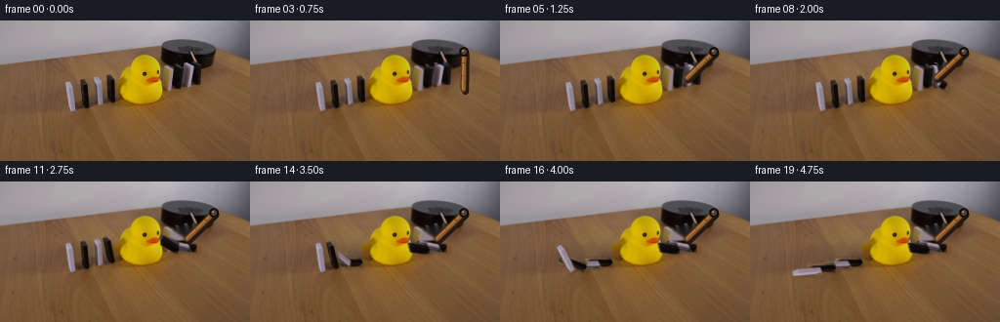
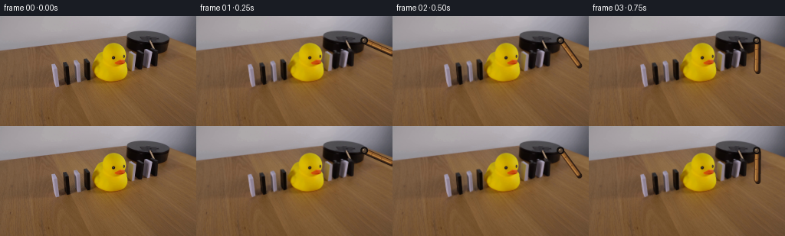

CODING AGENTS AS PIXEL WORLD MODELS
traex/GPT-5.6-Sol · 0055
点击播放 · 原生 RGB 像素
逐轮保存的候选
回放视频、检查图与代码变化。
每份候选均可单独播放。实际图片检查记录在下方工具轨迹中。
候选 01播放与检查图
点击播放 · 原生 RGB 像素

展开代码变化
--- 上一保存版本
+++ 本次保存版本
@@ -0,0 +1,191 @@
+from pathlib import Path
+import math
+
+import cv2
+import numpy as np
+from PIL import Image
+
+import artifact_io
+
+CASE_DIR = Path(__file__).resolve().parent
+H, W = 144, 256
+
+
+def smoothstep(x):
+ x = float(np.clip(x, 0.0, 1.0))
+ return x * x * (3.0 - 2.0 * x)
+
+
+def fall_angle(frame, start, duration=3.6):
+ """Accelerating fall with a very small, critically damped landing bounce."""
+ q = (frame - start) / duration
+ if q <= 0:
+ return 0.0
+ if q < 1:
+ # Gravity-dominated motion: slow departure followed by a fast fall.
+ return -88.0 * (q ** 1.72)
+ elapsed = frame - (start + duration)
+ return -88.0 + 2.0 * math.exp(-0.72 * elapsed) * math.sin(2.45 * elapsed)
+
+
+def affine_about(point, degrees):
+ """Image-coordinate rotation. Positive degrees are visually clockwise."""
+ bx, by = point
+ a = math.radians(degrees)
+ c, s = math.cos(a), math.sin(a)
+ return np.array([[c, -s, bx - c * bx + s * by],
+ [s, c, by - s * bx - c * by]], dtype=np.float32)
+
+
+def warp_rgba(rgb, alpha, matrix):
+ wrgb = cv2.warpAffine(rgb, matrix, (W, H), flags=cv2.INTER_CUBIC,
+ borderMode=cv2.BORDER_CONSTANT, borderValue=(0, 0, 0))
+ wa = cv2.warpAffine(alpha, matrix, (W, H), flags=cv2.INTER_CUBIC,
+ borderMode=cv2.BORDER_CONSTANT, borderValue=0)
+ return wrgb, np.clip(wa, 0.0, 1.0)
+
+
+def blend(frame, layer, alpha):
+ a = np.clip(alpha, 0.0, 1.0)[..., None]
+ return frame * (1.0 - a) + layer.astype(np.float32) * a
+
+
+def polygon_alpha(points, softness=0.55):
+ m = np.zeros((H, W), np.uint8)
+ cv2.fillPoly(m, [np.asarray(points, np.int32)], 255, lineType=cv2.LINE_AA)
+ a = m.astype(np.float32) / 255.0
+ if softness:
+ a = cv2.GaussianBlur(a, (0, 0), softness)
+ a[a > 0.97] = 1.0
+ return a
+
+
+def render_domino(frame, source, alpha, base, angle, previous_angle=None):
+ # A faint, soft contact shadow anchors the moving piece to the tabletop.
+ mat = affine_about(base, angle)
+ obj, a = warp_rgba(source, alpha, mat)
+ shadow = cv2.GaussianBlur(a, (0, 0), 1.25)
+ shadow = cv2.warpAffine(shadow, np.float32([[1, 0, 1.3], [0, 1, 1.7]]),
+ (W, H), flags=cv2.INTER_LINEAR,
+ borderMode=cv2.BORDER_CONSTANT, borderValue=0)
+ shade = np.zeros_like(frame) + np.array([45.0, 31.0, 22.0], np.float32)
+ frame = blend(frame, shade, shadow * 0.20)
+
+ # At the fastest part of a fall, retain a restrained photographic motion smear.
+ if previous_angle is not None and abs(angle - previous_angle) > 24:
+ mid = 0.72 * angle + 0.28 * previous_angle
+ ghost, ga = warp_rgba(source, alpha, affine_about(base, mid))
+ frame = blend(frame, ghost, ga * 0.10)
+
+ frame = blend(frame, obj, a)
+ return frame
+
+
+def draw_wooden_arm(frame, angle, opacity=1.0):
+ """Draw a shaded wooden lever attached to the black platform."""
+ # Supersampling keeps the short diagonal arm clean at this resolution.
+ scale = 4
+ canvas = cv2.resize(np.clip(frame, 0, 255).astype(np.uint8), (W * scale, H * scale),
+ interpolation=cv2.INTER_CUBIC).astype(np.float32)
+ pivot = np.array([219.0, 32.0])
+ length = 38.5
+ r = math.radians(angle)
+ end = pivot + np.array([math.cos(r), math.sin(r)]) * length
+ p = tuple(np.round(pivot * scale).astype(int))
+ e = tuple(np.round(end * scale).astype(int))
+
+ overlay = canvas.copy()
+ # Cast shadow, dark edge, warm wood body, then a narrow specular edge.
+ ps = (p[0] + 2 * scale, p[1] + 2 * scale)
+ es = (e[0] + 2 * scale, e[1] + 2 * scale)
+ cv2.line(overlay, ps, es, (38, 25, 18), 7 * scale, cv2.LINE_AA)
+ cv2.line(overlay, p, e, (73, 43, 23), 6 * scale, cv2.LINE_AA)
+ cv2.line(overlay, p, e, (145, 93, 43), 4 * scale, cv2.LINE_AA)
+ # Off-axis highlight and subtle longitudinal grain.
+ n = np.array([-math.sin(r), math.cos(r)]) * 0.8 * scale
+ ph = tuple(np.round(pivot * scale + n).astype(int))
+ eh = tuple(np.round(end * scale + n).astype(int))
+ cv2.line(overlay, ph, eh, (188, 133, 70), 1 * scale, cv2.LINE_AA)
+ for frac, tone in [(0.29, (105, 61, 29)), (0.64, (122, 74, 34))]:
+ q = pivot + (end - pivot) * frac
+ q1 = tuple(np.round((q + np.array([-math.sin(r), math.cos(r)]) * 1.5) * scale).astype(int))
+ q2 = tuple(np.round((q - np.array([-math.sin(r), math.cos(r)]) * 1.5) * scale).astype(int))
+ cv2.line(overlay, q1, q2, tone, max(1, scale // 2), cv2.LINE_AA)
+
+ # The axle remains fixed on the platform.
+ cv2.circle(overlay, p, 5 * scale, (18, 14, 13), -1, cv2.LINE_AA)
+ cv2.circle(overlay, p, 3 * scale, (83, 65, 51), -1, cv2.LINE_AA)
+ cv2.circle(overlay, (p[0] - scale, p[1] - scale), scale, (174, 147, 112), -1, cv2.LINE_AA)
+ canvas = canvas * (1.0 - opacity) + overlay * opacity
+ return cv2.resize(canvas.astype(np.uint8), (W, H), interpolation=cv2.INTER_AREA).astype(np.float32)
+
+
+def main():
+ original = np.asarray(Image.open(CASE_DIR / "first_frame.png").convert("RGB"), dtype=np.uint8)
+ if original.shape != (H, W, 3):
+ raise ValueError(f"first_frame.png has unexpected shape {original.shape}")
+
+ # Polygons were obtained from local RGB/edge analysis of first_frame.png.
+ # They follow each photographed domino, including its perspective taper.
+ dominoes = [
+ # name, polygon, bottom pivot, cascade start frame
+ ("right_black", [(198, 47), (205, 46), (206, 64), (197, 69)], (202.0, 66.5), 5.0),
+ ("right_white", [(189, 46), (197, 44), (198, 63), (188, 68)], (193.0, 66.0), 6.5),
+ ("right_black_2", [(178, 50), (187, 47), (188, 65), (177, 70)], (182.5, 68.0), 8.0),
+ ("left_black_near", [(109, 57), (117, 56), (119, 81), (111, 85)], (114.0, 83.0), 10.0),
+ ("left_white_near", [(96, 60), (102, 58), (105, 83), (98, 87)], (101.0, 85.0), 11.5),
+ ("left_black_far", [(81, 62), (90, 60), (93, 87), (84, 91)], (87.0, 89.0), 13.0),
+ ("left_white_far", [(67, 64), (73, 62), (77, 90), (69, 94)], (72.5, 92.0), 14.5),
+ ]
+ alphas = [polygon_alpha(d[1]) for d in dominoes]
+
+ # Inpaint only the narrow source silhouettes. Nearby table grain and the duck
+ # remain untouched; source objects are then composited at their current pose.
+ hole = np.zeros((H, W), np.uint8)
+ for a in alphas:
+ hole[np.asarray(a > 0.12)] = 255
+ hole = cv2.dilate(hole, np.ones((3, 3), np.uint8), iterations=1)
+ # OpenCV expects BGR, but inpainting channels independently is equivalent here.
+ clean = cv2.inpaint(original[:, :, ::-1], hole, 3, cv2.INPAINT_TELEA)[:, :, ::-1]
+
+ frames = []
+ for f in range(20):
+ if f == 0:
+ # Required exact first frame (no decode/re-encode alteration).
+ frames.append(original.copy())
+ continue
+
+ # Use the clean plate only under the domino silhouettes; everywhere else
+ # is the original locked-off photograph.
+ frame = original.astype(np.float32).copy()
+ under = cv2.GaussianBlur((hole.astype(np.float32) / 255.0), (0, 0), 0.42)
+ frame = blend(frame, clean, under)
+
+ # Rebuild the complete chain, static or moving, from photographed pixels.
+ for (_, _, base, start), alpha in zip(dominoes, alphas):
+ angle = fall_angle(f, start)
+ prev = fall_angle(f - 1, start)
+ frame = render_domino(frame, original, alpha, base, angle, prev)
+
+ # Clockwise actuation: the lever sweeps from the right side of the platform
+ # down and left, contacting the first black domino at frame 5.
+ if f <= 5:
+ t = smoothstep((f - 0.15) / 4.85)
+ arm_angle = 14.0 + (136.0 - 14.0) * t
+ else:
+ # Small elastic recoil after impact, then rest against the fallen row.
+ u = f - 5.0
+ arm_angle = 136.0 - 4.2 * math.exp(-0.45 * u) * math.sin(1.65 * u)
+ frame = draw_wooden_arm(frame, arm_angle, opacity=0.98)
+
+ frames.append(np.clip(np.rint(frame), 0, 255).astype(np.uint8))
+
+ frames = np.stack(frames, axis=0)
+ assert frames.shape == (20, H, W, 3)
+ assert frames.dtype == np.uint8
+ assert np.array_equal(frames[0], original)
+ artifact_io.save(frames, CASE_DIR)
+
+
+if __name__ == "__main__":
+ main()
候选 02播放与检查图
点击播放 · 原生 RGB 像素


展开代码变化
--- 上一保存版本
+++ 本次保存版本
@@ -85,8 +85,8 @@
"""Draw a shaded wooden lever attached to the black platform."""
# Supersampling keeps the short diagonal arm clean at this resolution.
scale = 4
- canvas = cv2.resize(np.clip(frame, 0, 255).astype(np.uint8), (W * scale, H * scale),
- interpolation=cv2.INTER_CUBIC).astype(np.float32)
+ layer = np.zeros((H * scale, W * scale, 3), np.uint8)
+ mask = np.zeros((H * scale, W * scale), np.uint8)
pivot = np.array([219.0, 32.0])
length = 38.5
r = math.radians(angle)
@@ -94,30 +94,33 @@
p = tuple(np.round(pivot * scale).astype(int))
e = tuple(np.round(end * scale).astype(int))
- overlay = canvas.copy()
# Cast shadow, dark edge, warm wood body, then a narrow specular edge.
ps = (p[0] + 2 * scale, p[1] + 2 * scale)
es = (e[0] + 2 * scale, e[1] + 2 * scale)
- cv2.line(overlay, ps, es, (38, 25, 18), 7 * scale, cv2.LINE_AA)
- cv2.line(overlay, p, e, (73, 43, 23), 6 * scale, cv2.LINE_AA)
- cv2.line(overlay, p, e, (145, 93, 43), 4 * scale, cv2.LINE_AA)
+ cv2.line(layer, ps, es, (38, 25, 18), 7 * scale, cv2.LINE_AA)
+ cv2.line(mask, ps, es, 105, 7 * scale, cv2.LINE_AA)
+ cv2.line(layer, p, e, (73, 43, 23), 6 * scale, cv2.LINE_AA)
+ cv2.line(mask, p, e, 255, 6 * scale, cv2.LINE_AA)
+ cv2.line(layer, p, e, (145, 93, 43), 4 * scale, cv2.LINE_AA)
# Off-axis highlight and subtle longitudinal grain.
n = np.array([-math.sin(r), math.cos(r)]) * 0.8 * scale
ph = tuple(np.round(pivot * scale + n).astype(int))
eh = tuple(np.round(end * scale + n).astype(int))
- cv2.line(overlay, ph, eh, (188, 133, 70), 1 * scale, cv2.LINE_AA)
+ cv2.line(layer, ph, eh, (188, 133, 70), 1 * scale, cv2.LINE_AA)
for frac, tone in [(0.29, (105, 61, 29)), (0.64, (122, 74, 34))]:
q = pivot + (end - pivot) * frac
q1 = tuple(np.round((q + np.array([-math.sin(r), math.cos(r)]) * 1.5) * scale).astype(int))
q2 = tuple(np.round((q - np.array([-math.sin(r), math.cos(r)]) * 1.5) * scale).astype(int))
- cv2.line(overlay, q1, q2, tone, max(1, scale // 2), cv2.LINE_AA)
+ cv2.line(layer, q1, q2, tone, max(1, scale // 2), cv2.LINE_AA)
# The axle remains fixed on the platform.
- cv2.circle(overlay, p, 5 * scale, (18, 14, 13), -1, cv2.LINE_AA)
- cv2.circle(overlay, p, 3 * scale, (83, 65, 51), -1, cv2.LINE_AA)
- cv2.circle(overlay, (p[0] - scale, p[1] - scale), scale, (174, 147, 112), -1, cv2.LINE_AA)
- canvas = canvas * (1.0 - opacity) + overlay * opacity
- return cv2.resize(canvas.astype(np.uint8), (W, H), interpolation=cv2.INTER_AREA).astype(np.float32)
+ cv2.circle(layer, p, 5 * scale, (18, 14, 13), -1, cv2.LINE_AA)
+ cv2.circle(mask, p, 5 * scale, 255, -1, cv2.LINE_AA)
+ cv2.circle(layer, p, 3 * scale, (83, 65, 51), -1, cv2.LINE_AA)
+ cv2.circle(layer, (p[0] - scale, p[1] - scale), scale, (174, 147, 112), -1, cv2.LINE_AA)
+ layer = cv2.resize(layer, (W, H), interpolation=cv2.INTER_AREA)
+ mask = cv2.resize(mask, (W, H), interpolation=cv2.INTER_AREA).astype(np.float32) / 255.0
+ return blend(frame, layer, mask * opacity)
def main():
@@ -155,17 +158,21 @@
frames.append(original.copy())
continue
- # Use the clean plate only under the domino silhouettes; everywhere else
- # is the original locked-off photograph.
+ # Use the clean plate only beneath dominoes that have actually begun to
+ # move. Static pieces consequently stay pixel-identical to the source.
frame = original.astype(np.float32).copy()
- under = cv2.GaussianBlur((hole.astype(np.float32) / 255.0), (0, 0), 0.42)
- frame = blend(frame, clean, under)
+ moving_mask = np.zeros((H, W), np.float32)
+ for (_, _, _, start), alpha in zip(dominoes, alphas):
+ if f > start:
+ moving_mask = np.maximum(moving_mask, alpha)
+ frame = blend(frame, clean, moving_mask)
# Rebuild the complete chain, static or moving, from photographed pixels.
for (_, _, base, start), alpha in zip(dominoes, alphas):
angle = fall_angle(f, start)
prev = fall_angle(f - 1, start)
- frame = render_domino(frame, original, alpha, base, angle, prev)
+ if f > start:
+ frame = render_domino(frame, original, alpha, base, angle, prev)
# Clockwise actuation: the lever sweeps from the right side of the platform
# down and left, contacting the first black domino at frame 5.
候选 03播放与检查图
可观测工具轨迹
实际执行的命令与返回图片。
命令 1exit 0
/bin/bash -lc "cat GENERATION_RULES.md && printf '\\n--- PROMPT ---\\n' && cat prompt.txt"
命令 2exit 1
/bin/bash -lc "find . -maxdepth 2 -type f -printf '%p\\n' | sort && printf '\\n--- TOOLS ---\\n' && command -v ffmpeg && command -v ffprobe && python3 - <<'PY'
from PIL import Image
im=Image.open('first_frame.png')
print(im.mode, im.size)
print(im.getextrema())
PY"命令 3exit 0
/bin/bash -lc 'cat artifact_io.py'
命令 4exit 0
/bin/bash -lc "python3 - <<'PY'
from PIL import Image
import numpy as np
im=Image.open('first_frame.png').convert('RGB'); a=np.array(im)
print('mode,size',im.mode,im.size,'dtype',a.dtype,'range',a.min(),a.max())
print('mean/std',a.mean((0,1)),a.std((0,1)))
# row/col luminance summaries
lum=a.mean(2)
for y in range(0,144,8): print('row',y,round(lum[y].mean(),1),round(lum[y].min(),1),round(lum[y].max(),1))
PY"命令 5exit 0
/bin/bash -lc "python3 - <<'PY'
try:
import cv2; print('cv2',cv2.__version__)
except Exception as e: print('no cv2',e)
try:
import scipy; print('scipy',scipy.__version__)
except Exception as e: print('no scipy',e)
try:
import imageio; print('imageio',imageio.__version__)
except Exception as e: print('no imageio',e)
PY"命令 6exit 0
/bin/bash -lc "python3 - <<'PY'
import cv2, numpy as np
im=cv2.imread('first_frame.png')
hsv=cv2.cvtColor(im,cv2.COLOR_BGR2HSV)
# color categories stats/bboxes
cats={
'yellow':((15,80,70),(40,255,255)),
'black':((0,0,0),(180,255,65)),
'white':((0,0,160),(180,60,255)),
'brown':((0,40,30),(20,255,220)),
'wood':((5,20,50),(30,200,210)),
}
for k,(lo,hi) in cats.items():
m=cv2.inRange(hsv,np.array(lo),np.array(hi))>0
ys,xs=np.where(m)
print(k,len(xs),'bbox', (xs.min(),ys.min(),xs.max(),ys.max()) if len(xs) else None)
n,lab,st,cen=cv2.connectedComponentsWithStats(m.astype('uint8'),8)
comps=[]
for i in range(1,n):
x,y,w,h,a=st[i];
if a>=5: comps.append((int(a),(int(x),int(y),int(w),int(h)),tuple(np.round(cen[i],1))))
print(sorted(comps,reverse=True)[:20])
PY"命令 7exit 0
/bin/bash -lc "python3 - <<'PY'
import cv2,numpy as np
im=cv2.imread('first_frame.png')
g=cv2.cvtColor(im,cv2.COLOR_BGR2GRAY)
e=cv2.Canny(g,50,120)
# edge count x/y hist peaks
for axis,name in [(0,'x'),(1,'y')]:
h=e.sum(axis)//255
inds=np.argsort(h)[-30:][::-1]
print(name,[(int(i),int(h[i])) for i in inds])
# Hough lines
lines=cv2.HoughLinesP(e,1,np.pi/180,threshold=18,minLineLength=8,maxLineGap=3)
arr=[]
for l in lines[:,0,:]:
x1,y1,x2,y2=map(int,l); le=((x2-x1)**2+(y2-y1)**2)**.5; ang=np.degrees(np.arctan2(y2-y1,x2-x1))
arr.append((round(le,1),round(ang,1),(x1,y1,x2,y2)))
print('lines')
for x in sorted(arr,reverse=True)[:80]:print(x)
PY"命令 8exit 0
/bin/bash -lc "python3 - <<'PY'
import cv2,numpy as np
im=cv2.imread('first_frame.png')
# 16x9 grid mean RGB
rgb=im[:,:,::-1]
for yy in range(9):
row=[]
for xx in range(16):
p=rgb[yy*16:(yy+1)*16,xx*16:(xx+1)*16].mean((0,1)).astype(int)
row.append('%02x%02x%02x'%tuple(p))
print(' '.join(row))
# exact-ish dark counts each x lower area 20:100
hsv=cv2.cvtColor(im,cv2.COLOR_BGR2HSV)
m=(hsv[:,:,2]<65)
print('dark x',[(x,int(m[:,x].sum())) for x in range(256) if m[:,x].sum()>20])
PY"命令 9exit 0
/bin/bash -lc "python3 - <<'PY'
import cv2,numpy as np
im=cv2.imread('first_frame.png'); hsv=cv2.cvtColor(im,cv2.COLOR_BGR2HSV)
# aggregate every 2x2 dominant/center classify manually; ROI x50:230 y14:100, 2 pixels
for y in range(14,101,2):
s=''
for x in range(50,231,2):
H,S,V=np.median(hsv[y:y+2,x:x+2],axis=(0,1))
if V<45:c='@'
elif V<75:c='#'
elif S<30 and V>160:c='W'
elif S<55 and V>110:c='w'
elif 19<=H<=36 and S>170 and V>140:c='Y'
elif 10<=H<=38 and S>100 and V>100:c='y'
elif S<40:c='.'
elif H<10 and S>70:c='r'
elif H<25 and S>50:c='b'
else:c='+'
s+=c
print(f'{y:03}',s)
PY"命令 10exit 0
/bin/bash -lc "python3 - <<'PY'
import cv2, numpy as np
im=cv2.imread('first_frame.png'); hsv=cv2.cvtColor(im,cv2.COLOR_BGR2HSV)
for thr in [40,55,70,85,100,120,150]:
m=(hsv[:,:,2]<thr).astype('uint8')*255
cs,_=cv2.findContours(m,cv2.RETR_EXTERNAL,cv2.CHAIN_APPROX_SIMPLE)
out=[]
for c in cs:
x,y,w,h=cv2.boundingRect(c); a=cv2.contourArea(c)
if a>=4: out.append((round(a,1),(x,y,w,h)))
print('thr',thr,sorted(out,reverse=True)[:30])
# exact values patches dominant colors
for box in [(160,15,225,75),(60,50,125,95),(115,25,170,95)]:
x1,y1,x2,y2=box
print('\\nBOX',box)
for y in range(y1,y2,3):
s=''
for x in range(x1,x2,3):
b,g,r=im[y:y+3,x:x+3].mean((0,1)); mx=max(b,g,r); mn=min(b,g,r); v=mx
if v<35:c='@'
elif v<65:c='#'
elif v<95:c='d'
elif mx-mn<15 and v>170:c='W'
elif mx-mn<22:c='.'
elif r>1.5*b and g>1.3*b:c='Y'
elif r>1.25*b:c='b'
else:c='+'
s+=c
print('%03d '%y+s)
PY"命令 11exit 0
/bin/bash -lc "python3 - <<'PY'
import cv2,numpy as np
im=cv2.imread('first_frame.png'); hsv=cv2.cvtColor(im,cv2.COLOR_BGR2HSV)
for thr in [45,70,90,115]:
print('\\nVALUE <',thr)
m=hsv[:,:,2]<thr
for y in range(15,91):
xs=np.where(m[y,130:241])[0]+130
runs=[]
if len(xs):
z=np.r_[0,np.where(np.diff(xs)>1)[0]+1,len(xs)]
for a,b in zip(z[:-1],z[1:]):
if b-a>=2:runs.append((int(xs[a]),int(xs[b-1])))
if runs: print(f'{y:03}',runs)
PY"命令 12exit 0
/bin/bash -lc "python3 - <<'PY'
import cv2,numpy as np
im=cv2.imread('first_frame.png'); hsv=cv2.cvtColor(im,cv2.COLOR_BGR2HSV)
for lo,hi,s,v in [(20,35,160,130),(22,33,180,150),(24,32,180,130),(20,30,200,160),(25,35,150,150)]:
m=((hsv[:,:,0]>=lo)&(hsv[:,:,0]<=hi)&(hsv[:,:,1]>=s)&(hsv[:,:,2]>=v)).astype('uint8')
n,l,st,c=cv2.connectedComponentsWithStats(m,8)
out=[]
for i in range(1,n):
x,y,w,h,a=map(int,st[i]);
if a>=3:out.append((a,(x,y,w,h),tuple(c[i].round(1))))
print(lo,hi,s,v,sorted(out,reverse=True)[:20])
# colors sample key ROI x120:180 y20:90 kmeans
p=im[15:95,115:180].reshape(-1,3).astype(np.float32)
crit=(cv2.TERM_CRITERIA_EPS+cv2.TERM_CRITERIA_MAX_ITER,100,.1)
_,lab,cen=cv2.kmeans(p,12,None,crit,10,cv2.KMEANS_PP_CENTERS)
for n,c in sorted(zip(np.bincount(lab.ravel()),cen),reverse=True): print(n, 'RGB',c[::-1].astype(int), 'HSV',cv2.cvtColor(np.uint8([[c]]),cv2.COLOR_BGR2HSV)[0,0])
PY"命令 13exit 0
/bin/bash -lc "python3 - <<'PY'
from PIL import Image
import numpy as np
A=np.array(Image.open('first_frame.png'))
# print RGB every 2 px region 155:225 15:75 grouped into rough quantized palette symbols via actual thresholds
# palette via kmeans whole ROI 16, print centers and map chars
import cv2
roi=A[15:75,155:225]
p=roi.reshape(-1,3).astype('float32')
_,l,c=cv2.kmeans(p,16,None,(cv2.TERM_CRITERIA_EPS+cv2.TERM_CRITERIA_MAX_ITER,100,.1),20,cv2.KMEANS_PP_CENTERS)
# sort luminance
order=np.argsort(c.mean(1)); chars='@#%&Xx+;:,.-~=oO'
mp={int(old):chars[i] for i,old in enumerate(order)}
print([(mp[i],np.round(x).astype(int).tolist(),int((l==i).sum())) for i,x in enumerate(c)])
lab=l.reshape(60,70)
for y in range(0,60,2):
print(f'{y+15:02}', ''.join(mp[np.bincount(lab[y:y+2,x:x+2].ravel(),minlength=16).argmax()] for x in range(0,70,2)))
# samples grid numerical selected
for y in range(18,73,4):
print('Y',y, ['%02x%02x%02x'%tuple(A[y,x]) for x in range(158,225,4)])
PY"命令 14exit 0
/bin/bash -lc "python3 - <<'PY'
import cv2,numpy as np
im=cv2.imread('first_frame.png'); g=cv2.cvtColor(im,cv2.COLOR_BGR2GRAY)
for roi in [(120,0,256,100),(0,20,140,105),(140,0,256,144)]:
x0,y0,x1,y1=roi; e=cv2.Canny(g[y0:y1,x0:x1],20,60)
lines=cv2.HoughLinesP(e,1,np.pi/360,threshold=7,minLineLength=5,maxLineGap=2)
arr=[]
if lines is not None:
for z in lines[:,0]:
a,b,c,d=map(int,z); a+=x0;c+=x0;b+=y0;d+=y0
le=np.hypot(c-a,d-b); ang=np.degrees(np.arctan2(d-b,c-a))
arr.append((round(le,1),round(ang,1),(a,b,c,d)))
print('\\nROI',roi)
for q in sorted(arr,reverse=True)[:100]: print(q)
PY"命令 15exit 0
/bin/bash -lc "python3 - <<'PY'
from PIL import Image
import numpy as np,cv2
A=np.array(Image.open('first_frame.png'))
roi=A[40:100,20:125];p=roi.reshape(-1,3).astype('float32')
_,l,c=cv2.kmeans(p,14,None,(cv2.TERM_CRITERIA_EPS+cv2.TERM_CRITERIA_MAX_ITER,100,.1),20,cv2.KMEANS_PP_CENTERS)
order=np.argsort(c.mean(1)); chars='@#%&Xx+;:,.-~O'; mp={int(old):chars[i] for i,old in enumerate(order)}
print([(mp[i],np.round(x).astype(int).tolist(),int((l==i).sum())) for i,x in enumerate(c)])
lab=l.reshape(60,105)
for y in range(0,60,2):
print(f'{y+40:03}', ''.join(mp[np.bincount(lab[y:y+2,x:x+2].ravel(),minlength=14).argmax()] for x in range(0,104,2)))
PY"命令 16exit 0
/bin/bash -lc "python3 - <<'PY'
from PIL import Image
import numpy as np,cv2
A=np.array(Image.open('first_frame.png'))
# numerical RGB at grid left
for y in range(20,101,4): print('Y',y,['%02x%02x%02x'%tuple(A[y,x]) for x in range(0,82,4)])
# edges and kmeans x0:80 y20:100 symbols
roi=A[20:100,0:80];p=roi.reshape(-1,3).astype('float32')
_,l,c=cv2.kmeans(p,16,None,(cv2.TERM_CRITERIA_EPS+cv2.TERM_CRITERIA_MAX_ITER,100,.1),20,cv2.KMEANS_PP_CENTERS)
order=np.argsort(c.mean(1));chars='@#%&Xx+;:,.-~=oO';mp={int(old):chars[i] for i,old in enumerate(order)}
print([(mp[i],np.round(v).astype(int).tolist(),int((l==i).sum())) for i,v in enumerate(c)])
lab=l.reshape(80,80)
for y in range(0,80,2): print(f'{y+20:03}', ''.join(mp[np.bincount(lab[y:y+2,x:x+2].ravel(),minlength=16).argmax()] for x in range(0,80,2)))
PY"命令 17exit 0
/bin/bash -lc "python3 - <<'PY'
from PIL import Image
import numpy as np,cv2
A=np.array(Image.open('first_frame.png'))
roi=A[0:95,200:256];p=roi.reshape(-1,3).astype('float32')
_,l,c=cv2.kmeans(p,16,None,(cv2.TERM_CRITERIA_EPS+cv2.TERM_CRITERIA_MAX_ITER,100,.1),20,cv2.KMEANS_PP_CENTERS)
order=np.argsort(c.mean(1));chars='@#%&Xx+;:,.-~=oO';mp={int(old):chars[i] for i,old in enumerate(order)}
print([(mp[i],np.round(v).astype(int).tolist(),int((l==i).sum())) for i,v in enumerate(c)])
lab=l.reshape(95,56)
for y in range(0,94,2): print(f'{y:03}', ''.join(mp[np.bincount(lab[y:y+2,x:x+2].ravel(),minlength=16).argmax()] for x in range(0,56,2)))
for y in range(0,94,4): print('Y',y,['%02x%02x%02x'%tuple(A[y,x]) for x in range(200,256,4)])
PY"命令 18exit 0
/bin/bash -lc "python3 - <<'PY'
import cv2,numpy as np
A=cv2.imread('first_frame.png'); h=cv2.cvtColor(A,cv2.COLOR_BGR2HSV)
# test wood likely S>70, H 5-25, but table too. in apparatus region print runs by thresholds
for condname,m in [
('satbrown',(h[:,:,0]>=5)&(h[:,:,0]<=25)&(h[:,:,1]>80)&(h[:,:,2]>45)),
('lightbrown',(h[:,:,0]>=5)&(h[:,:,0]<=25)&(h[:,:,1]>70)&(h[:,:,2]>90)),
('orange',(h[:,:,0]>=5)&(h[:,:,0]<=18)&(h[:,:,1]>100)&(h[:,:,2]>100)),
('yellow',(h[:,:,0]>=18)&(h[:,:,0]<=35)&(h[:,:,1]>130)&(h[:,:,2]>100))]:
print('\\n',condname)
for y in range(15,76):
xs=np.where(m[y,155:231])[0]+155
runs=[]
if len(xs):
z=np.r_[0,np.flatnonzero(np.diff(xs)>1)+1,len(xs)]
for a,b in zip(z[:-1],z[1:]):
if b-a>=2:runs.append((int(xs[a]),int(xs[b-1])))
if runs:print(y,runs)
PY"命令 19exit 0
/bin/bash -lc "python3 - <<'PY'
from PIL import Image
import numpy as np
A=np.array(Image.open('first_frame.png'))
for x in range(220,256,4):
yp=round(.43*x-53)
print('\\nx',x,'pred',yp)
for y in range(yp-8,yp+10):print(y,tuple(A[y,x]),end='; ')
print()
# gradients around right crop strongest per col
G=np.mean(A,2); gy=np.abs(np.diff(G,axis=0));
for x in range(220,256):
ids=np.argsort(gy[25:75,x])[-5:]+25
print(x,[(int(y),round(float(gy[y,x]),1)) for y in ids[::-1]])
PY"命令 20exit 0
/bin/bash -lc "cat > generate.py <<'PY'
from pathlib import Path
import math
import cv2
import numpy as np
from PIL import Image
import artifact_io
CASE_DIR = Path(__file__).resolve().parent
H, W = 144, 256
def smoothstep(x):
x = float(np.clip(x, 0.0, 1.0))
return x * x * (3.0 - 2.0 * x)
def fall_angle(frame, start, duration=3.6):
\"\"\"Accelerating fall with a very small, critically damped landing bounce.\"\"\"
q = (frame - start) / duration
if q <= 0:
return 0.0
if q < 1:
# Gravity-dominated motion: slow departure followed by a fast fall.
return -88.0 * (q ** 1.72)
elapsed = frame - (start + duration)
return -88.0 + 2.0 * math.exp(-0.72 * elapsed) * math.sin(2.45 * elapsed)
def affine_about(point, degrees):
\"\"\"Image-coordinate rotation. Positive degrees are visually clockwise.\"\"\"
bx, by = point
a = math.radians(degrees)
c, s = math.cos(a), math.sin(a)
return np.array([[c, -s, bx - c * bx + s * by],
[s, c, by - s * bx - c * by]], dtype=np.float32)
def warp_rgba(rgb, alpha, matrix):
wrgb = cv2.warpAffine(rgb, matrix, (W, H), flags=cv2.INTER_CUBIC,
borderMode=cv2.BORDER_CONSTANT, borderValue=(0, 0, 0))
wa = cv2.warpAffine(alpha, matrix, (W, H), flags=cv2.INTER_CUBIC,
borderMode=cv2.BORDER_CONSTANT, borderValue=0)
return wrgb, np.clip(wa, 0.0, 1.0)
def blend(frame, layer, alpha):
a = np.clip(alpha, 0.0, 1.0)[..., None]
return frame * (1.0 - a) + layer.astype(np.float32) * a
def polygon_alpha(points, softness=0.55):
m = np.zeros((H, W), np.uint8)
cv2.fillPoly(m, [np.asarray(points, np.int32)], 255, lineType=cv2.LINE_AA)
a = m.astype(np.float32) / 255.0
if softness:
a = cv2.GaussianBlur(a, (0, 0), softness)
a[a > 0.97] = 1.0
return a
def render_domino(frame, source, alpha, base, angle, previous_angle=None):
# A faint, soft contact shadow anchors the moving piece to the tabletop.
mat = affine_about(base, angle)
obj, a = warp_rgba(source, alpha, mat)
shadow = cv2.GaussianBlur(a, (0, 0), 1.25)
shadow = cv2.warpAffine(shadow, np.float32([[1, 0, 1.3], [0, 1, 1.7]]),
(W, H), flags=cv2.INTER_LINEAR,
borderMode=cv2.BORDER_CONSTANT, borderValue=0)
shade = np.zeros_like(frame) + np.array([45.0, 31.0, 22.0], np.float32)
frame = blend(frame, shade, shadow * 0.20)
# At the fastest part of a fall, retain a restrained photographic motion smear.
if previous_angle is not None and abs(angle - previous_angle) > 24:
mid = 0.72 * angle + 0.28 * previous_angle
ghost, ga = warp_rgba(source, alpha, affine_about(base, mid))
frame = blend(frame, ghost, ga * 0.10)
frame = blend(frame, obj, a)
return frame
def draw_wooden_arm(frame, angle, opacity=1.0):
\"\"\"Draw a shaded wooden lever attached to the black platform.\"\"\"
# Supersampling keeps the short diagonal arm clean at this resolution.
scale = 4
canvas = cv2.resize(np.clip(frame, 0, 255).astype(np.uint8), (W * scale, H * scale),
interpolation=cv2.INTER_CUBIC).astype(np.float32)
pivot = np.array([219.0, 32.0])
length = 38.5
r = math.radians(angle)
end = pivot + np.array([math.cos(r), math.sin(r)]) * length
p = tuple(np.round(pivot * scale).astype(int))
e = tuple(np.round(end * scale).astype(int))
overlay = canvas.copy()
# Cast shadow, dark edge, warm wood body, then a narrow specular edge.
ps = (p[0] + 2 * scale, p[1] + 2 * scale)
es = (e[0] + 2 * scale, e[1] + 2 * scale)
cv2.line(overlay, ps, es, (38, 25, 18), 7 * scale, cv2.LINE_AA)
cv2.line(overlay, p, e, (73, 43, 23), 6 * scale, cv2.LINE_AA)
cv2.line(overlay, p, e, (145, 93, 43), 4 * scale, cv2.LINE_AA)
# Off-axis highlight and subtle longitudinal grain.
n = np.array([-math.sin(r), math.cos(r)]) * 0.8 * scale
ph = tuple(np.round(pivot * scale + n).astype(int))
eh = tuple(np.round(end * scale + n).astype(int))
cv2.line(overlay, ph, eh, (188, 133, 70), 1 * scale, cv2.LINE_AA)
for frac, tone in [(0.29, (105, 61, 29)), (0.64, (122, 74, 34))]:
q = pivot + (end - pivot) * frac
q1 = tuple(np.round((q + np.array([-math.sin(r), math.cos(r)]) * 1.5) * scale).astype(int))
q2 = tuple(np.round((q - np.array([-math.sin(r), math.cos(r)]) * 1.5) * scale).astype(int))
cv2.line(overlay, q1, q2, tone, max(1, scale // 2), cv2.LINE_AA)
# The axle remains fixed on the platform.
cv2.circle(overlay, p, 5 * scale, (18, 14, 13), -1, cv2.LINE_AA)
cv2.circle(overlay, p, 3 * scale, (83, 65, 51), -1, cv2.LINE_AA)
cv2.circle(overlay, (p[0] - scale, p[1] - scale), scale, (174, 147, 112), -1, cv2.LINE_AA)
canvas = canvas * (1.0 - opacity) + overlay * opacity
return cv2.resize(canvas.astype(np.uint8), (W, H), interpolation=cv2.INTER_AREA).astype(np.float32)
def main():
original = np.asarray(Image.open(CASE_DIR / \"first_frame.png\").convert(\"RGB\"), dtype=np.uint8)
if original.shape "'!= (H, W, 3):
raise ValueError(f"first_frame.png has unexpected shape {original.shape}")
# Polygons were obtained from local RGB/edge analysis of first_frame.png.
# They follow each photographed domino, including its perspective taper.
dominoes = [
# name, polygon, bottom pivot, cascade start frame
("right_black", [(198, 47), (205, 46), (206, 64), (197, 69)], (202.0, 66.5), 5.0),
("right_white", [(189, 46), (197, 44), (198, 63), (188, 68)], (193.0, 66.0), 6.5),
("right_black_2", [(178, 50), (187, 47), (188, 65), (177, 70)], (182.5, 68.0), 8.0),
("left_black_near", [(109, 57), (117, 56), (119, 81), (111, 85)], (114.0, 83.0), 10.0),
("left_white_near", [(96, 60), (102, 58), (105, 83), (98, 87)], (101.0, 85.0), 11.5),
("left_black_far", [(81, 62), (90, 60), (93, 87), (84, 91)], (87.0, 89.0), 13.0),
("left_white_far", [(67, 64), (73, 62), (77, 90), (69, 94)], (72.5, 92.0), 14.5),
]
alphas = [polygon_alpha(d[1]) for d in dominoes]
# Inpaint only the narrow source silhouettes. Nearby table grain and the duck
# remain untouched; source objects are then composited at their current pose.
hole = np.zeros((H, W), np.uint8)
for a in alphas:
hole[np.asarray(a > 0.12)] = 255
hole = cv2.dilate(hole, np.ones((3, 3), np.uint8), iterations=1)
# OpenCV expects BGR, but inpainting channels independently is equivalent here.
clean = cv2.inpaint(original[:, :, ::-1], hole, 3, cv2.INPAINT_TELEA)[:, :, ::-1]
frames = []
for f in range(20):
if f == 0:
# Required exact first frame (no decode/re-encode alteration).
frames.append(original.copy())
continue
# Use the clean plate only under the domino silhouettes; everywhere else
# is the original locked-off photograph.
frame = original.astype(np.float32).copy()
under = cv2.GaussianBlur((hole.astype(np.float32) / 255.0), (0, 0), 0.42)
frame = blend(frame, clean, under)
# Rebuild the complete chain, static or moving, from photographed pixels.
for (_, _, base, start), alpha in zip(dominoes, alphas):
angle = fall_angle(f, start)
prev = fall_angle(f - 1, start)
frame = render_domino(frame, original, alpha, base, angle, prev)
# Clockwise actuation: the lever sweeps from the right side of the platform
# down and left, contacting the first black domino at frame 5.
if f <= 5:
t = smoothstep((f - 0.15) / 4.85)
arm_angle = 14.0 + (136.0 - 14.0) * t
else:
# Small elastic recoil after impact, then rest against the fallen row.
u = f - 5.0
arm_angle = 136.0 - 4.2 * math.exp(-0.45 * u) * math.sin(1.65 * u)
frame = draw_wooden_arm(frame, arm_angle, opacity=0.98)
frames.append(np.clip(np.rint(frame), 0, 255).astype(np.uint8))
frames = np.stack(frames, axis=0)
assert frames.shape == (20, H, W, 3)
assert frames.dtype == np.uint8
assert np.array_equal(frames[0], original)
artifact_io.save(frames, CASE_DIR)
if __name__ == "__main__":
main()
PY
python3 generate.py
python3 - <<'"'PY'
from pathlib import Path
import numpy as np
from PIL import Image
z=np.load('pixels.npz')['pixels']
first=np.array(Image.open('first_frame.png')).astype(np.uint32)
packed=(first[:,:,0]<<16)|(first[:,:,1]<<8)|first[:,:,2]
print('pixels',z.shape,z.dtype,'first_exact',np.array_equal(z[:,:,0],packed))
fs=sorted(Path('frames').glob('*.png'))
print('frames',len(fs),Image.open(fs[-1]).mode,Image.open(fs[-1]).size)
for i in range(20):
a=np.array(Image.open(fs[i])); b=np.array(Image.open(fs[max(0,i-1)]))
print(i, 'changed_prev',int(np.any(a"'!=b,axis=2).sum()),'"'MAD0',round(float(np.abs(a.astype(int)-first.astype(int)).mean()),3))
PY"命令 21exit 0
/bin/bash -lc "python3 generate.py && python3 - <<'PY'
from pathlib import Path
import numpy as np
from PIL import Image
A=np.array(Image.open('first_frame.png'))
print('first_exact',np.array_equal(np.array(Image.open('frames/00.png')),A))
for i in range(20):
a=np.array(Image.open(f'frames/{i:02}.png'));b=np.array(Image.open(f'frames/{max(i-1,0):02}.png'))
d=np.any(a"'!=b,2); ys,xs=np.where(d)
print(i,int(d.sum()),((int(xs.min()),int(ys.min()),int(xs.max()),int(ys.max())) if len(xs) else None),round(float(np.abs(a.astype(int)-A.astype(int)).mean()),3))
PY
python3 -m py_compile generate.py artifact_io.py
ls -lh pixels.npz inspection.png transition_check.png index.html'命令 22exit 0
/bin/bash -lc "python3 - <<'PY'
import cv2,numpy as np
im=cv2.imread('first_frame.png');h=cv2.cvtColor(im,cv2.COLOR_BGR2HSV)
m=((h[:,:,0]>=20)&(h[:,:,0]<=35)&(h[:,:,1]>160)&(h[:,:,2]>120)).astype('uint8')*255
cs,_=cv2.findContours(m,cv2.RETR_EXTERNAL,cv2.CHAIN_APPROX_SIMPLE)
c=max(cs,key=cv2.contourArea)
print(cv2.contourArea(c),cv2.boundingRect(c))
for eps in [1,2,3,4]:print(eps,cv2.approxPolyDP(c,eps,True).reshape(-1,2).tolist())
PY"保存候选 3 份；完成命令 22 次；可验证图片返回 0 张。原始 API 响应与完整日志保留在本地。